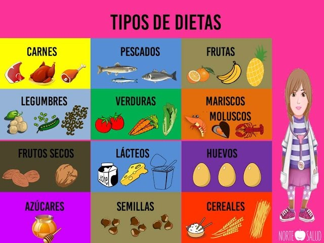
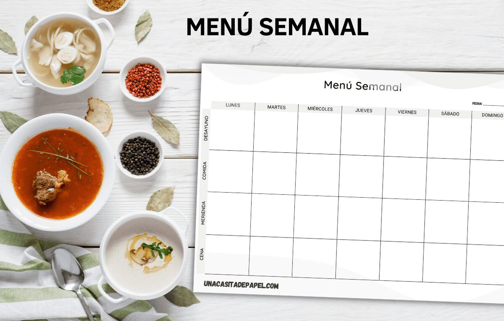
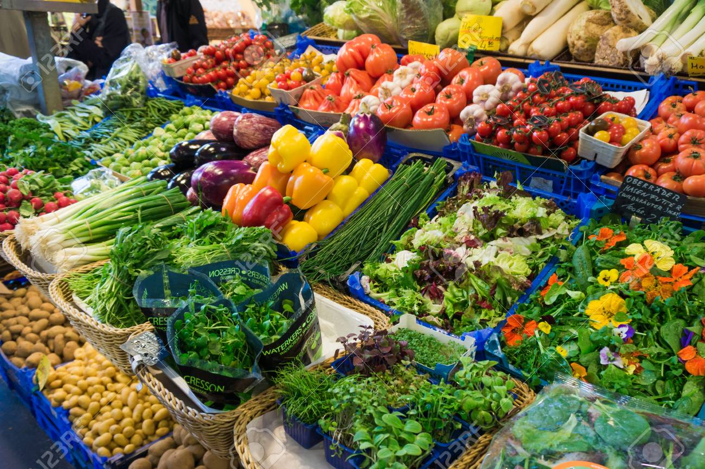
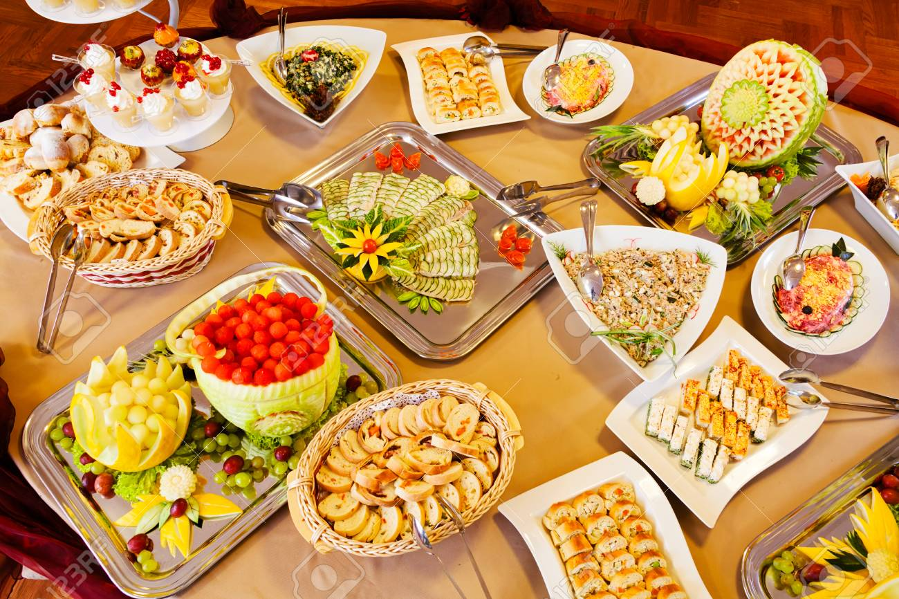

Recomendaciones de Alimentación
Consejos para hacer un buen uso del generador de menús
Utilizar un generador de menús puede facilitar la planificación de comidas y asegurar una dieta equilibrada.
Consejos Prácticos
Optimiza tus comidas con estos consejos prácticos
¡Planifica tus comidas fácilmente!

1. Define tus necesidades
Adapta tu menú a tus necesidades y las preferencias alimenticias de tu familia.

2. Planifica con anticipación
Organiza tus comidas semanales para ahorrar tiempo y evitar improvisaciones.

3. Aprovecha los ingredientes de temporada
Los productos de temporada son más frescos, económicos y nutritivos.

4. Personaliza los menús
Ajusta el menú a tus metas calóricas y restricciones alimenticias.

5. Incluye variedad
Cambia recetas e ingredientes cada semana para mantener el interés.
¡Haz que tu menú semanal sea tu aliado!
Planifica, disfruta y cuida tu salud.